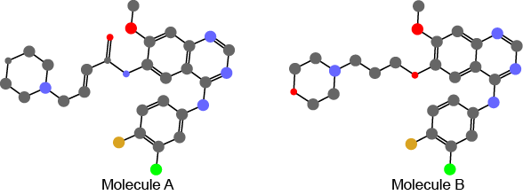

What is MCS ?
The Maximum Common Substructure/Subgraph (MCS) is the most popopular
concept for generating a one-to-one atom correspondence between two
molecules. A common substructure is defined as a substructure present
in two molecules with the same atom types and bond connection. The MCS
are defined as the common substructures with the largest number of atoms
or bonds. Various types of MCS with different restraints have been
proposed so far. Among them, we will explain Connected MCS and
Topologically disconnected MCS, and the related concepts, isomorphic
structure and substructure.
- Isomorphic: Each atom in a molecule must have a corresponding
atom in another molecule. Atom types of all of the atoms and connection
of all of the atom pairs are identical.

- Substructure:Molecule A is a part of Molecule B. In
the corresponding substructre, atom types and connection of of atom
pairs are identical. Typically, the molecule A is assigned as the 'Query
molecule'.
- C-MCS (Connected MCS): Maximum common substructure
in Molecule A and Molecule B with the same atom types and bond
connection. The substructure must be a connected graph, all the atoms
belong to one connected component.
- TD-MCS(Topologically constrained disconnected MCS):Maximum
substructure in Molecule A and Molecule B with the same atom types and
bond connection. The substructure can be a disconnected graph, however,
the difference in the topological distance between corresponding atom
pairs must be theta or less. The topological distance is defined as
number of bonds on the shortest path between two atoms.
- TD-MCS(theta=0): No difference in the topological distance between corresponding atom pairs.
- TD-MCS(theta=1): The difference in the topological distance between corresponding atom pairs must be 1 or 0.

- In figures for CMCS/TDMCS, Molecule A is Dacomitib (D09883), Molecule B is Gefitinib (D01977).
- Reference :
Kawabata T. Build-up algorithm for atomic correspondence between chemical structures. J.Chem.Info.Model., 2011,51, 1775-1787.
LastModified: Feb 28, 2013